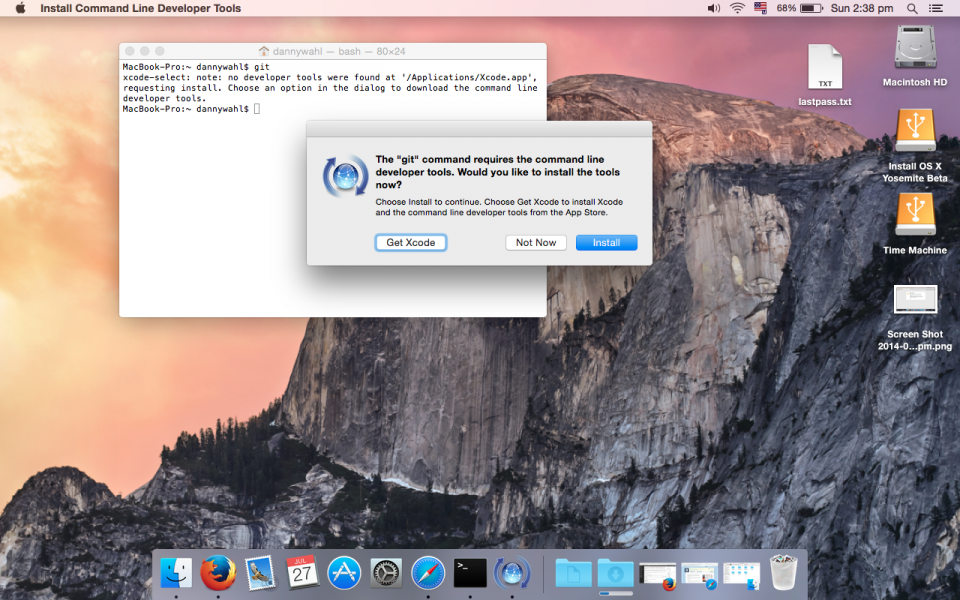
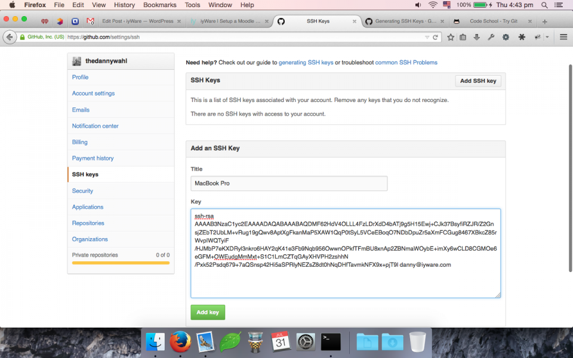
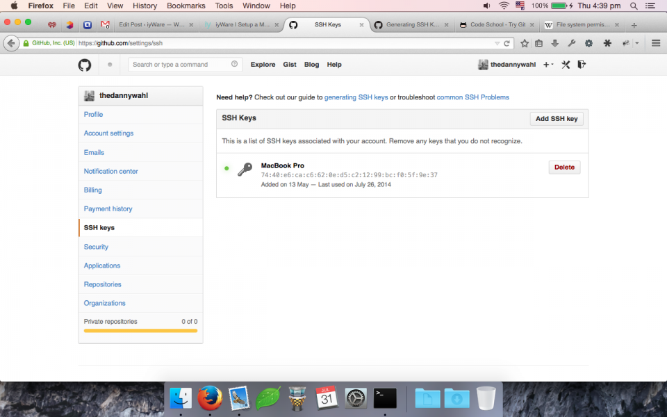
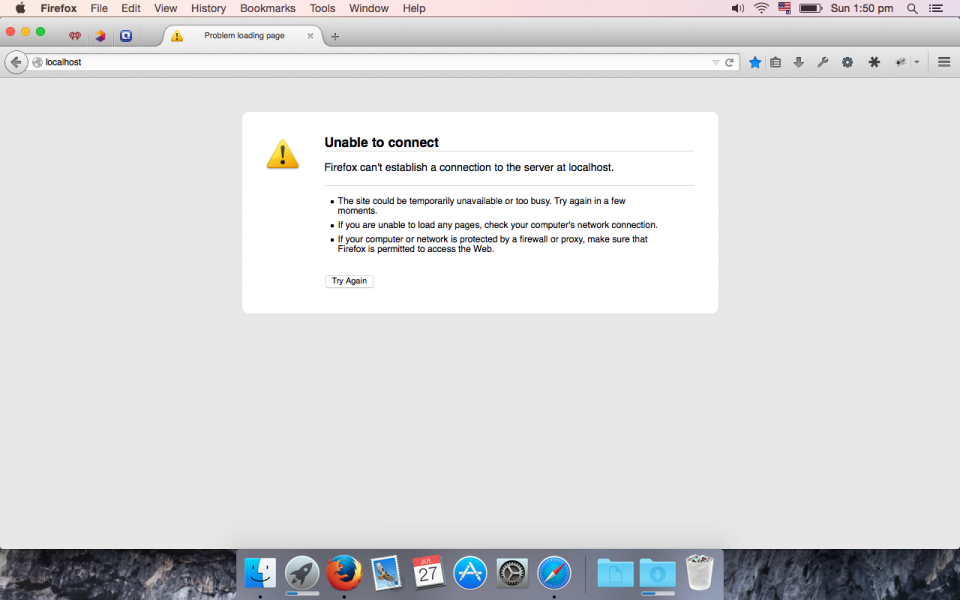
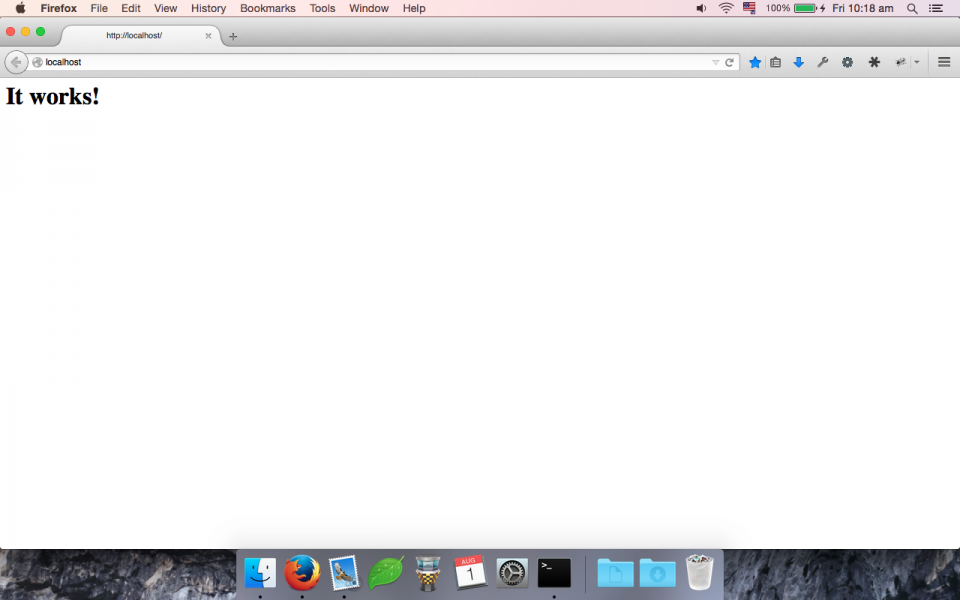

Update
A quick update, this was originally written for Yosemite Beta 1, XCode 6 Beta, and PHP56 RC1. Now that the official versions of all those are out, a lot of this post is unnecessary because, well, stable software is much more… stable. Who knew? Anyways, here’s a tl;dr for the stable version:
Install Homebrew xcode-select --install ruby -e "$(curl -fsSL https://raw.githubusercontent.com/Homebrew/install/master/install)" brew doctor # Tap Repos brew tap homebrew/dupes brew tap homebrew/versions brew tap homebrew/homebrew-php brew tap homebrew/apache # Verify brew update && brew upgrade # Macintosh brew install git brew install openssl ssh-keygen -t rsa -C “email@address.invalid” ssh-add ~/.ssh/idrsa # Apache sudo apachectl stop sudo launchctl unload -w /System/Library/LaunchDaemons/org.apache.httpd.plist 2>/dev/null brew install httpd24 --with-privileged-ports --with-brewed-ssl sudo cp -v /usr/local/Cellar/httpd24/2.4.10/homebrew.mxcl.httpd24.plist /Library/LaunchDaemons sudo chown -v root:wheel /Library/LaunchDaemons/homebrew.mxcl.httpd24.plist sudo chmod -v 644 /Library/LaunchDaemons/homebrew.mxcl.httpd24.plist sudo launchctl load /Library/LaunchDaemons/homebrew.mxcl.httpd24.plist sudo httpd -k start # MySQL brew install mysql ln -sfv /usr/local/opt/mysql/*.plist ~/Library/LaunchAgents launchctl load ~/Library/LaunchAgents/homebrew.mxcl.mysql.plist mysqladmin -u root password “NEWPASSWORD” # PHP brew install php56 --homebrew-apxs --with-apache --with-homebrew-curl --with-homebrew-openssl --with-phpdbg --with-tidy --without-snmp chmod -R ug+w /usr/local/Cellar/php56/5.6.2/lib/php pear config-set phpini /usr/local/etc/php/5.6/php.ini printf '\nAddHandler php5-script .php\nAddType text/html .php' >> /usr/local/etc/apache2/2.4/httpd.conf perl -p -i -e 's/DirectoryIndex index.html/DirectoryIndex index.php index.html/g' /usr/local/etc/apache2/2.4/httpd.conf printf '\nexport PATH="$(brew --prefix homebrew/php/php56)/bin:$PATH"' >> ~/.profile # Dev Stuff brew install composer brew install behat brew install node npm -g install grunt npm -g install shifter brew tap danpoltawski/homebrew-mdk brew install moodle-sdk
Original Post
It’s that time of the year again. Apple will soon release a “new” OS (10.10 Yosemite) and in celebration I’ll format my hard drive and reinstall from scratch and then slowly start reconfiguring my machine for development purposes. So I figured, if I’m going to do it- I might as well document it too. Because, to be honest, I kinda forget what I’ve done… Over a few posts we will look at every step of setting up a Moodle development machine from services configuration through installing Moodle and we’ll document all the tools and commands that are needed along the way. In part one we’ll go over installing Homebrew, git, Apache, MySQL, and PHP. In part two we’ll go over configuring Apache, MySQL, and git, as well as how to use the MDK, git, and JIRA to contribute your code. This post is good for any developer that’s using PHP- not just Moodle. So if you want to set up a Mac to develop in WordPress, Drupal, or whatever- this will get you started.
Starting Point
Sorry, we won’t be starting with the unboxing of a new Mac, because I didn’t have a $2,000 budget for this post. And in fact we won’t even be starting with the OS setup, which is OK because if you’re using 10.7 or newer, then you’re okay. If you’re still running 10.6 I’m going to assume that it’s because Apple locked you out of updates because your machine is too old, jerks. Do yourself a favor, buy a new PC.
Here’s what you’ll need: Internet access (how are you even reading this?), administrative privileges (the account doesn’t have to be admin), and accounts at a couple of websites (or the ability to sign up). I’ll also need your credit card number and the last four digits of your social security number, just leave them in the comments. Just kidding, don’t.
MAPP? MAMP? Meh.
If you spend any amount of time in the Moodle forums you’ll run across all kinds of cool acronyms. Usually the glossary auto-linker will fill your head with some cool new knowledge, but for the sake of thoroughness we’ll go over a few of them here. You may see people talk about their WAMP or MAMP or LAMP server. Generally this describes their server configuration.
If somebody says they’re using WAMP that means that their server is running on “Windows”. Lamp would be “Linux” and MAMP – Mac. Though technically it should be “OS X” but OAMP is hard to say. Generally most web softwares don’t need a specific platform to run on, a website can run on any operating system. Generally. Stupid ASP.
The second letter, “A”, which in the examples above is consistent means that the web service running on the server is “Apache”. There are a variety of web service applications available including IIS, Nginx, lighttpd. Generally the software (i.e. Moodle) doesn’t mandate a specific web server software either. Now it could be that the software (i.e. Moodle) depends on some other software (i.e. PHP) that is not compatible or available on that web server. But again, this isn’t usually a problem.
The Third letter defines the database type. Moodle supports 4 different databases out of the box: MySQL, PostgreSQL, Oracle, and MSSQL. Because Moodle has a sweet database driver ($DB) the database that you use doesn’t really matter- in terms of developing on your machine. If you’re trying to pick a database for a large, live server, it probably does matter. So if you see LAMP, MySQL or LAPP, PostgreSQL. Users of other DB types aren’t so clever so they’ll just say boring stuff like “I’m using Windows Server 2008 RC2 with IIS 7 and MSSQL.” instead of WS08RC2IIS7MSSQLFTW, which in my opinion is cooler AND easier to understand.
Finally, the last “P” stands for “PHP” which stands for “PHP Hypertext Preprocessor” which stands for “PHP Hypertext Preprocessor Hypertext Preprocessor” which stands for “All work and no play makes Jack a dull boy.” Anyways… You’ll need this. Moodle won’t run with out it, and without a specific version as mentioned in the release notes of the Moodle version you download.
With so many options, how do you choose? Like I said in the title, “Meh”. I’m going to assume you’re developing on a Mac, so that rules out Windows and Linux. Apache is by far the most popular web server and is included with OS X. MSSQL and Oracle don’t run on OS X. You need PHP.
So your only real options are MySQL or PostgreSQL, and we’ll cover that in a bit, but first let’s start with “M”.
Macintosh (OS X)
We need to do a bit of configuring of our Mac before we dive into setting up services. Mostly this will involve downloading some applications.
Get git
Moodle development is managed using git. git in a nutshell lets you track changes of code from lots of users. If you’re going to be doing Moodle development you MUST use git. Fortunately OS X comes with git included, but you can’t use it. Open up terminal and enter the following command:
which git; git -version
and you’ll end up with a return something like this
MacBook-Pro:~ dannywahl$ which git /usr/bin/git MacBook-Pro:~ dannywahl$ git -v xcode-select: note: no developer tools were found at '/Applications/Xcode.app', requesting install. Choose an option in the dialog to download the command line developer tools.
with a prompt to download XCode command line tools:

Go ahead and download it. It’s also worth it to install Xcode as well. For this post you will need both Xcode 5 which you can download from the Apple Developer site and the Xcode 6 beta. I recommend that you rename Xcode 5 from “xcode.app” to “xcode5.app” and Xcode 6 from “Xcode-beta.app” to “Xcode.app” because most of our toolchain will be using the utilities in Xcode 6. Once Xcode and the command line tools are installed we can now use the version of git included with OS X- however it’s a little dated, and we’re going to install a newer version of git from somewhere else.
When it comes to installing the git binary we have a few different choices. First, we can install the official git version from git-scm.com, second we can install a bundled version of git with a different application like github for Mac or git-tower (both of which we’ll go over later), or third you can use a third-party package manager to install a copy of git for you. This last option is the one we will be using.
Homebrew
Homebrew is self-styled “The missing package manager for OS X” and they really deliver. If you’ve spent any amount of time working on an actual Unix or Linux machine you probably both appreciate OS X’s “Unix roots” and really dislike what Apple has chosen to trim back. Without a package manager like pac-man, apt, or the like, OS X is really limited. Homebrew solves that in a really elegant way, so let’s install it. Open up terminal and copy and paste this single command:
ruby -e “$(curl -fsSL https://raw.github.com/Homebrew/homebrew/go/install)”
This command has three requirements, one you need to have administrator access or you’ll not be able to install the program as the /usr/ directory is protected. Two you’ll need internet access as the command downloads the script from github and then passes it to ruby to run. If you don’t have internet access you’ll see an error like this:
dannywahlmbp:~ dannywahl$ ruby -e "$(curl -fsSL https://raw.github.com/Homebrew/homebrew/go/install)" curl: (6) Could not resolve host: raw.github.com
Three, you will need to have the XCode command line utilities installed. You should have already install them. If you don’t have the command line tools installed then you will be prompted to install them:
> Installing the Command Line Tools (expect a GUI popup): > /usr/bin/sudo /usr/bin/xcode-select --install xcode-select: note: install requested for command line developer tools Press any key when the installation has completed.
After that you should be good to go. Just run brew doctor as recommended to make sure everything’s okay.
Last login: Tue Jul 29 10:28:20 on ttys000 dannywahlmbp:~ dannywahl$ ruby -e "$(curl -fsSL https://raw.github.com/Homebrew/homebrew/go/install)" > This script will install: /usr/local/bin/brew /usr/local/Library/... /usr/local/share/man/man1/brew.1 Press RETURN to continue or any other key to abort > /usr/bin/sudo /bin/mkdir /usr/local WARNING: Improper use of the sudo command could lead to data loss or the deletion of important system files. Please double-check your typing when using sudo. Type "man sudo" for more information. To proceed, enter your password, or type Ctrl-C to abort. Password: > /usr/bin/sudo /bin/chmod g+rwx /usr/local > /usr/bin/sudo /usr/bin/chgrp admin /usr/local > /usr/bin/sudo /bin/mkdir /Library/Caches/Homebrew > /usr/bin/sudo /bin/chmod g+rwx /Library/Caches/Homebrew > Downloading and installing Homebrew... remote: Counting objects: 188543, done. remote: Compressing objects: 100% (51551/51551), done. remote: Total 188543 (delta 135844), reused 188510 (delta 135819) Receiving objects: 100% (188543/188543), 37.53 MiB | 395.00 KiB/s, done. Resolving deltas: 100% (135844/135844), done. From https://github.com/Homebrew/homebrew * [new branch] master -> origin/master HEAD is now at 881c231 Fix up dep directories before activating ENV extensions > Installation successful! > Next steps Run brew doctor before you install anything Run brew help to get started dannywahlmbp:~ dannywahl$ brew doctor Your system is ready to brew.
If you see “Your system is ready to brew.” then we can move on to the next step. At this point you do have OS X’s version of git installed. To see your specific version run git --version in terminal:
dannywahlmbp:~ dannywahl$ git --version git version 1.9.3 (Apple Git-50)
That’s the version on my system, which is the bleeding-edge version of git that Apple is shipping on a beta operating system and according to github releases, it was released (at time of this writing) about two and a half months ago. Not to mention it’s a full major release behind. git-scm.com has the latest version of git available as 2.0.3. I like to be a little more up to date than that. If we search the homebrew repository we can see the latest version available is 2.0.2:
dannywahlmbp:~ dannywahl$ brew search git bagit git-extras git-number github-release easy-git git-flow git-open gitslave geogit git-flow-avh git-sh legit git git-flow-clone git-ssh libgit2 git-annex git-ftp git-tf magit git-archive-all git-gerrit git-tig stgit git-cal git-imerge git-tracker topgit git-cola git-integration git-url-sub git-crypt git-multipush gitbucket git-encrypt git-now giter8 homebrew/versions/git-tf-2.0.2 homebrew/binary/subgit
At the time of this writing 2.0.2 is only 13 days old and 2.0.3 is only 5 days old. That’s a much better timeframe for updating. So let’s install the homebrew version of git using brew install git
dannywahlmbp:~ dannywahl$ brew install git > Downloading https://www.kernel.org/pub/software/scm/git/git-2.0.3.tar.gz ######################################################################## 100.0% > make prefix=/usr/local/Cellar/git/2.0.3 sysconfdir=/usr/local/etc CC=clang C > make CC=clang CFLAGS= LDFLAGS= > make clean > make CC=clang CFLAGS= LDFLAGS= > Downloading https://www.kernel.org/pub/software/scm/git/git-manpages-2.0.3.t ######################################################################## 100.0% > Downloading https://www.kernel.org/pub/software/scm/git/git-htmldocs-2.0.3.t ######################################################################## 100.0% > Caveats The OS X keychain credential helper has been installed to: /usr/local/bin/git-credential-osxkeychain The 'contrib' directory has been installed to: /usr/local/share/git-core/contrib Bash completion has been installed to: /usr/local/etc/bash_completion.d zsh completion has been installed to: /usr/local/share/zsh/site-functions > Summary /usr/local/Cellar/git/2.0.3: 1328 files, 31M, built in 69 seconds
So you’ll see a couple of things- first we actually installed 2.0.3 and that’s because homebrew isn’t a repository of binaries, it simply manages them, the install actually comes from the main git repository at git-scm (kernel.org). In addition to the vanilla git binary we also get bash completion and man pages. Sweet! Go ahead and check the version again, you may have to quit your terminal session and start a new one.
dannywahlmbp:~ dannywahl$ git --version git version 2.0.3
That’s pretty much it for git, now we can move on to github, where we’ll be managing our source code.
Github
Github is where all the cool kids are storing their code these days. Well, everybody except Moodle and Mahara. But at least they provide copies of their work at github- Moodle at least, I didn’t check Mahara (too lazy to open a new tab…).
Basically Github is “the cloud” for source code versioning. You create a repository there, “clone” it to your machine, edit, and push your changes back to the server. If you’re new to git there are lots of resources available to you. We’ll cover a few basics in this post but mastering it is beyond the scope. I suggest you check out:
- Learn Version Control With Git
- Git –local-branching-on-the-cheap
- Code School – Try Git
- Git Tutorials
Sorry, that list isn’t nearly as fun as anything Buzzfeed has put together, and full disclosure- I learned git just by Moodle development so I can’t vouch for any of the above resources… (then why did I even recommend them? Stupid!) Anyways…
If you do not already have an account at github you will need to go sign up. Once you’ve cleared the hoops of verifying email, etc… log in. Github should provide you with a nice step-by-step tutorial of setting up you Mac. But we’ll do it again, just to be sure!
Log in and head over to your profile, fill in any info you want and then click on the SSH Keys tab on the left. SSH basically lets you securely communicate with the server where you are storing your code. Right now we’ll go through the process of generating an SSH key and storing it on github.
Check for existing SSH Keys
Open Terminal again, now if you’re on a fresh OS install you won’t have to do this but you can. Type the following command:
ls -lsa ~/.ssh
ls is the command to ‘list’ everything in a directory. ~ is short code for your home folder, on a Mac that’s /Users/UserName (by default). / is a folder inside of your home folder. .ssh is the name of the folder. On Unix systems a folder that starts with a ‘.’ will be hidden- no need for chflags! So we’ve put together a command that says “show the contents of the hidden folder ‘.ssh’ inside of my home folder”. And that is probably shockingly similar to the AppleScript that you would use to do that too.
If terminal gives you this return:
dannywahlmbp:~ dannywahl$ ls -lsa ~/.ssh ls: /Users/dannywahl/.ssh: No such file or directory
then we need to create the directory with another command (just copy and paste):
mkdir ~/.ssh; chmod 700 ~/.ssh
This will do two things, create the ssh directory, and then make sure only you can access it. You can learn more about Unix permissions here.
If terminal gives you this return:
dannywahlmbp:~ dannywahl$ ls -lsa ~/.ssh/ total 16 0 drwx------ 4 dannywahl staff 136 Jul 31 16:41 . 0 drwxr-xr-x+ 18 dannywahl staff 612 Jul 31 16:36 .. 8 -rw------- 1 dannywahl staff 1766 Jul 31 16:41 idrsa 8 -rw-r--r-- 1 dannywahl staff 398 Jul 31 16:41 idrsa.pub
Then you already have an SSH Key. IF you created this key and are sure of its security you can use it with github, skip to the “Adding your SSH Key to Github” section below. Otherwise you can create a new one.
Creating an SSH Key Set
When you create an SSH key you actually create two keys, a private key and a public key. You keep the private key and you can share the public key with others. This allows them to receive messages and ensure it is from you, but they can’t pretend to be you and send out messages on your behalf. Back in terminal we’re going to create a new RSA SSH key set. Run the command:
ssh-keygen -t rsa -C “email@address.invalid”
This will kick off a “Wizard” of sorts and walk you through creating your key pair. First you need to specify where to save the new keys, the default is your ~/.ssh folder, so just push enter.
Generating public/private rsa key pair. Enter file in which to save the key (/Users/dannywahl/.ssh/id_rsa):
Note that you can specify a different name, as you can have multiple SSH key pairs. Though for most instances a single pair is all that is necessary.
Next it will ask you for a key passphrase, which is optional. I strongly suggest that you add a passphrase for both added security and the fact that other SSH applications (not github) require a passphrase to function properly and if you want to reuse your key pair you will need a passphrase. Type your passphrase press Enter and type it again to make sure it matches.
Enter passphrase (empty for no passphrase): Enter same passphrase again:
After that your key pair will be save and you will be given some information about it. It will look something like this:
Your identification has been saved in /Users/dannywahl/.ssh/idrsa. Your public key has been saved in /Users/dannywahl/.ssh/idrsa.pub. The key fingerprint is: fa:e7:5c:f2:60:d8:ad:44:3c:a4:07:0d:b5:09:77:9f danny@iyware.com The key's randomart image is: +--[ RSA 2048]----+ | =A+ . | | = . | | +.=oE . | | . o= = | | .S . | | . | | | | | | | +-----------------+
The finger print and randomart allow you to verify that a public key copy is a real copy. Please note that these are NOT my real public key credentials. On that note you should NEVER share your private key with anyone.
Activating Your Key
Now that you have created your key you need to tell the operating system to use it. We will use the ssh-add command to load your key. Enter this command, and then type your key passphrase. If you didn’t enter a passphrase, simply press Enter.
dannywahlmbp:~ dannywahl$ ssh-add ~/.ssh/idrsa Enter passphrase for /Users/dannywahl/.ssh/idrsa: Identity added: /Users/dannywahl/.ssh/idrsa (/Users/dannywahl/.ssh/idrsa)
Copy Your Public Key to Github
The final step is to give github a copy of your public key. If you don’t have the SSH Keys page open you will need to navigate there and click “Add SSH Keys”. You can store more than one key with github, which is useful if you have multiple devices that you do development from.
Back in terminal you have one more command to run, simply copy and paste (unless you renamed your key):
pbcopy
This command copies the contents of your public key to your clipboard. You can also open your key in a text editor and copy the contents but this command prevents both omitting a character and accidentally editing the key. Switch back to github and paste in the “Key” field. If there’s a blank line at the end, that’s ok- don’t erase it. Remember we want the contents of the key exactly.
You’ll want to give you key a title so that if you ever have a security issue at github you can see exactly which machine accessed or changed which repositories. Your page should look something like this:

Click the “Add key” button and you’ll be taken back to the SSH Keys page, where your new key will be listed. If you look at terminal you’ll notice that the fingerprints match.

For now we’re done with github. So far we’ve set up homebrew, installed git, created an SSH key pair, and added a copy of our public key to github. Next we’ll start setting up the “server” side of our development machine, starting with Apache.
Apache
The Apache HTTPD server is the most popular web server in the world. And in fact Apache is included with OS X by default. Just copy and paste this command into terminal:
apachectl -v
Mine says:
Server version: Apache/2.4.9 (Unix) Server built: Jun 28 2014 12:11:10
Which is actually not that bad. Apache is one of those softwares that updates rather slowly, 2.4.10 was released on July 10th. Since Apache is included in OS X we can just use that right? Sure, just visit this link: http://localhost. Oops, does your screen look something like this?

That’s because even though Apache is included in OS X it’s off by default. We have a few options available that we’ll look at to enabling Apache.
The Apple Way
Even though Apple includes Apache as a part of OS X, and they used to include an option to enable it in the “Sharing” pane of System preferences, the preferred way to enable Apache on OS X since 10.7 is to buy the Server app from the App Store. That’s right, for only $19 Apple will sell you a button that starts Apache.
The Poor Man’s Way
The second option is to simply start Apache ourselves. Go to terminal and type this command:
sudo apachectl start
After you type your password head back to http://localhost and it should look more like this:

$20 bucks for that. To be fair to Apple, Server does give you lots of other functionality but for our purposes they’re not really necessary. Kind of like installing XCode to use git. Now, I’m going to recommend that you actually stop the Apache service because we are not going to use the built in version that Apple ships with.
sudo apachectl stop
The Homebrew Way
The reason we’re not going to use the version that ships with Apple is because they do a TON of customization to the Apache configurations and it makes it really difficult to simply add a vhost or edit a config. You even have to mess with groups to allow yourself to change files in your ~/Sites folder. Instead we’re going to install Apache via Homebrew and it will run entirely within your home folder.
First we need to unload the OS X version of Apache which is loaded on the machine at startup, but “stopped”. Copy and paste this into terminal.
sudo launchctl unload -w /System/Library/LaunchDaemons/org.apache.httpd.plist 2>/dev/null
Next we need to do is add the Apache repository to the list of repositories that Homebrew tracks, as it is not included by default.
brew tap homebrew/apache
and you’ll see that the repository is downloaded and 9 new forumlae are available for install.
dannywahlmbp:~ dannywahl$ brew tap homebrew/apache Cloning into '/usr/local/Library/Taps/homebrew/homebrew-apache'... remote: Counting objects: 241, done. remote: Total 241 (delta 0), reused 0 (delta 0) Receiving objects: 100% (241/241), 45.55 KiB | 39.00 KiB/s, done. Resolving deltas: 100% (130/130), done. Checking connectivity... done. Tapped 9 formulae
The new repository gives us two versions of Apache 2.2 and 2.4. For our development we will be installing Apache 2.4, however when we try we end up with an error:
dannywahlmbp:~ dannywahl$ brew install httpd24 Error: No available formula for apr (dependency of httpd24) Searching taps... homebrew/dupes/apr-util homebrew/dupes/apr homebrew/science/reapr
it seems that Apache 2.4 requires another app called ‘apr’ that isn’t on our system. Fortunately Homebrew does us a favor and tells us where to find it and it’s available in another repository, so we need to add that to our list of available repositories like before:
brew tap homebrew/dupes
According to the ‘dupes’ repository, “These formulae duplicate software provided by OS X, though may provide more recent or bugfix versions.” Now what’s nice is that homebrew will resolve dependencies for us now that it knows where the files are, so let’s try again:
brew install httpd24 –with-privileged-ports
httpd24 will get us the current version of Apache 2.4. The ‘with-privileged-ports’ parameter tells Apache to run on port 80/443 instead of 8080/8443. Essentially this means you can visit http://localhost instead of having to type http://localhost:8080. 80 and 443 are the default ports that all websites run on and for our development purposes are preferable.
If you get an error during compiling please follow the instructions of the output. If you have installed a beta version of Xcode on your machine please do NOT open an issue with the Homebrew people (like this one). Instead head over to the App Store and redownload the old version. If the app store won’t let you download you can go to the Apple Developer Downloads page and download the latest stable version of Xcode to your machine. You don’t have to remove the beta version, but the stable needs to be named ‘Xcode.app’.
Error: Homebrew doesn't know what compiler versions ship with your version of Xcode (6.0). Please brew update and if that doesn't help, file an issue with the output of brew --config: https://github.com/Homebrew/homebrew/issues Note that we only track stable, released versions of Xcode. Thanks! READ THIS: https://github.com/Homebrew/homebrew/wiki/troubleshooting If reporting this issue please do so at (not Homebrew/homebrew): https://github.com/homebrew/homebrew-apache/issues
Another issue I ran into was a configure failure because zlib couldn’t be found:
brew install httpd24 --with-privileged-ports > Downloading https://archive.apache.org/dist/httpd/httpd-2.4.10.tar.bz2 Already downloaded: /Library/Caches/Homebrew/httpd24-2.4.10.tar.bz2 > ./configure --enable-layout=Homebrew --enable-mods-shared=all --with-mpm=pre checking whether to enable modsed... shared (all) checking whether to enable modcharsetlite... shared (all) checking whether to enable moddeflate... checking dependencies checking for zlib location... not found checking whether to enable moddeflate... configure: error: moddeflate has been requested but can not be built due to prerequisite failures READ THIS: https://github.com/Homebrew/homebrew/wiki/troubleshooting If reporting this issue please do so at (not Homebrew/homebrew): https://github.com/homebrew/homebrew-apache/issues
This is probably a result of using a beta version of the Xcode command line tools, but there’s a simple fix that’s been reported. First you need to install zlib in Homebrew from the dupes repository.
brew install zlib
Homebrew will give you this caveat:
> Caveats This formula is keg-only, so it was not symlinked into /usr/local. Mac OS X already provides this software and installing another version in parallel can cause all kinds of trouble. Generally there are no consequences of this for you. If you build your own software and it requires this formula, you'll need to add to your build variables: LDFLAGS: -L/usr/local/opt/zlib/lib CPPFLAGS: -I/usr/local/opt/zlib/include
Which basically means that you need to manually use that version of zlib, which is what we’ll tell our Apache build script to do now. Go back to terminal and enter the following command:
brew edit httpd24
This will open the config in your default text editor. Enter this line:
args
After this section:
if build.with? "privileged-ports" args That will add a new argument that forces it to use our Homebrew version of zlib. Save the file and run the build again:
brew install httpd24 --with-privileged-ports
If you don't have any errors then your output should look something like this:
dannywahlmbp:~ dannywahl$ brew install httpd24 --with-privileged-ports > Downloading https://archive.apache.org/dist/httpd/httpd-2.4.10.tar.bz2 Already downloaded: /Library/Caches/Homebrew/httpd24-2.4.10.tar.bz2 > ./configure --enable-layout=Homebrew --enable-mods-shared=all --with-mpm=pre > make > make install > Caveats To have launchd start httpd24 at login: ln -sfv /usr/local/opt/httpd24/*.plist ~/Library/LaunchAgents Then to load httpd24 now: launchctl load ~/Library/LaunchAgents/homebrew.mxcl.httpd24.plist > Summary /usr/local/Cellar/httpd24/2.4.10: 199 files, 4.4M, built in 86 seconds
Finally it's important that we look at the caveats as they will tell us how to make sure that Apache starts when we log in to the system. Since we used the --with-privileged-ports parameter we will have to make some adjustments to the recommendations that Homebrew provides. Their recommendation is to create a symlink to your user LaunchAgents folder. That folder contains plists that do certain things when you log in. However, on a Unix system lower ports like 80 require root to run. Since this launch agent is launching Apache under your username it will quietly fail. Instead we will have the system (root) load it for us. The biggest difference is that Apache will be loaded at system start instead of when you log in. So go ahead and copy and paste this modified command into terminal.
sudo ln -sfv /usr/local/opt/httpd24/*.plist /Library/LaunchDaemons; sudo launchctl load /Library/LaunchDaemons/homebrew.mxcl.httpd24.plist
Now the next time you reboot Apache will load. But the beautiful thing about a service is that you can start, stop, or reload it at any time- we don't need to log out and log in again to start. Now, since we're running Apache as root we will need to use 'sudo'. So it's not necessary now, because we just loaded it, but for the future you can use:
sudo httpd -k start sudo httpd -k restart sudo httpd -k stop
for more info you can check the manual 'man' entry that's included with our Apache install.
man httpd
Now Apache is installed (by you) and running (as root). Go ahead and go back to http://localhost and you should see this:

By default the Apache configuration files are stored in
/usr/local/etc/apache2/2.4
and the web root is at
/usr/local/var/www/htdocs
We'll revisit further Apache configuration when we get to Moodle setup, but for now enjoy your shiny new site!
MySQL, uhh.. PostgreSQL
The next step on setting up our MA*P server is the database. In the old, olden days of 3 years ago OS X included MySQL in OS X server. Then Apple switched to Postgres. Then Apple bundled Postgres with the OS and added an 'enable' button in the Server app (a la Apache). And now starting with OS 10.9 it's back to being bundled exclusively with the Server App. tl;dr: you need to install a database, and I figure if it's so trivial for Apple to switch databases then it doesn't really matter which one we're using right ;)
Ok, here's the exception, if you're planning on developing some sort of Moodle plugin, or fixing bugs that are database oriented, then you'll probably want to install multiple database drivers. But for simpler development where Moodle $DB handled the transactions, pick your poison. I'm going to use MySQL. So let's head back to the Homebrew app in terminal and get started:
brew install mysql
Ok, caveat. If you happen to be on an as-of-yet-unreleased OS and have both Xcode 5 and Xcode 6 beta installed on your system you will need to use Xcode 6 to install MySQL otherwise this will happen:
brew install mysql > Installing dependencies for mysql: cmake, pkg-config, makedepend, ope > Installing mysql dependency: cmake > Downloading http://www.cmake.org/files/v3.0/cmake-3.0.0.tar.gz ######################################################################## 100.0% > ./bootstrap --prefix=/usr/local/Cellar/cmake/3.0.0 --system-libs --no-system See also "/tmp/cmake-Lgaj/cmake-3.0.0/CMakeFiles/CMakeError.log". --------------------------------------------- Error when bootstrapping CMake: Problem while running initial CMake --------------------------------------------- READ THIS: https://github.com/Homebrew/homebrew/wiki/troubleshooting These open issues may also help: Qt5 Cmake Files Incorrect (https://github.com/Homebrew/homebrew/issues/29938) Fix LLVM CMake modules not being preprocessed (https://github.com/Homebrew/homebrew/pull/29976) glm: Does not install FindGLM.cmake (https://github.com/Homebrew/homebrew/issues/28403) cmake builds fail on CLT-only with --env=std (https://github.com/Homebrew/homebrew/issues/29101) cmake find_package(PythonLibs) broken with brewed python on 10.9 (https://github.com/Homebrew/homebrew/issues/25118)
It's nice that they give you a log to inspect, but it's also kind of annoying that the /tmp dir gets cleaned up one it's done failing... Basically if you can capture the log in Console while it's failing you'll see that something in the Xcode tool is causing the failure. I guessed that it was because of Xcode 5 - and hey, lucky guess! So if you have that error drop into terminal and use this command:
mv /Applications/Xcode.app /Applications/Xcode5.app; mv /Applications/Xcode6-beta4.app /Applications/Xcode.app
Or just go to the /Applications folder and rename them, your choice. Then run the install command again. When the build is done you can move your Xcode apps back to their original names. If all goes well you should end up with some terminal output like this:
brew install mysql > Installing dependencies for mysql: cmake, pkg-config, makedepend, ope > Installing mysql dependency: cmake > Downloading http://www.cmake.org/files/v3.0/cmake-3.0.0.tar.gz Already downloaded: /Library/Caches/Homebrew/cmake-3.0.0.tar.gz > ./bootstrap --prefix=/usr/local/Cellar/cmake/3.0.0 --system-libs --no-system > make > make install /usr/local/Cellar/cmake/3.0.0: 1622 files, 25M, built in 4.1 minutes > Installing mysql dependency: pkg-config > Downloading http://pkgconfig.freedesktop.org/releases/pkg-config-0.28.tar.gz ######################################################################## 100.0% > ./configure --prefix=/usr/local/Cellar/pkg-config/0.28 --disable-host-tool - > make > make check > make install /usr/local/Cellar/pkg-config/0.28: 10 files, 608K, built in 89 seconds > Installing mysql dependency: makedepend > Downloading http://xorg.freedesktop.org/releases/individual/util/makedepend- ######################################################################## 100.0% > Downloading http://xorg.freedesktop.org/releases/individual/proto/xproto-7.0 ######################################################################## 100.0% > ./configure --disable-silent-rules --prefix=/private/tmp/makedepend-xfpn/mak > make install > Downloading http://xorg.freedesktop.org/releases/individual/util/util-macros ######################################################################## 100.0% > ./configure --prefix=/private/tmp/makedepend-xfpn/makedepend-1.0.5/xorg-macr > make install > ./configure --disable-silent-rules --prefix=/usr/local/Cellar/makedepend/1.0 > make install /usr/local/Cellar/makedepend/1.0.5: 7 files, 92K, built in 27 seconds > Installing mysql dependency: openssl > Downloading https://www.openssl.org/source/openssl-1.0.1h.tar.gz curl: (28) Operation timed out after 6190 milliseconds with 0 out of 0 bytes received Trying a mirror... > Downloading http://mirrors.ibiblio.org/openssl/source/openssl-1.0.1h.tar.gz ######################################################################## 100.0% > perl ./Configure --prefix=/usr/local/Cellar/openssl/1.0.1h --openssldir=/usr > make depend > make > make test > make install MANDIR=/usr/local/Cellar/openssl/1.0.1h/share/man MANSUFFIX=ssl > Caveats A CA file has been bootstrapped using certificates from the system keychain. To add additional certificates, place .pem files in /usr/local/etc/openssl/certs and run /usr/local/opt/openssl/bin/crehash This formula is keg-only, so it was not symlinked into /usr/local. Mac OS X already provides this software and installing another version in parallel can cause all kinds of trouble. The OpenSSL provided by OS X is too old for some software. Generally there are no consequences of this for you. If you build your own software and it requires this formula, you'll need to add to your build variables: LDFLAGS: -L/usr/local/opt/openssl/lib CPPFLAGS: -I/usr/local/opt/openssl/include > Summary /usr/local/Cellar/openssl/1.0.1h: 429 files, 15M, built in 4.1 minutes > Installing mysql > Downloading http://cdn.mysql.com/Downloads/MySQL-5.6/mysql-5.6.20.tar.gz ######################################################################## 100.0% > cmake . -DCMAKEINSTALLPREFIX=/usr/local/Cellar/mysql/5.6.20 -DCMAKEFINDF > make > make install > Caveats A "/etc/my.cnf" from another install may interfere with a Homebrew-built server starting up correctly. To connect: mysql -uroot To have launchd start mysql at login: ln -sfv /usr/local/opt/mysql/*.plist ~/Library/LaunchAgents Then to load mysql now: launchctl load ~/Library/LaunchAgents/homebrew.mxcl.mysql.plist Or, if you don't want/need launchctl, you can just run: mysql.server start > /usr/local/Cellar/mysql/5.6.20/bin/mysqlinstall_db --verbose --user=dannywa > Summary /usr/local/Cellar/mysql/5.6.20: 9578 files, 339M, built in 7.2 minutes
Now that's pretty amazing to me, and where homebrew is really worth its salt. All of those dependencies managed, auto downloaded, configured, and installed: cmake, pkg-config, makedepend, openssl, and finally mysql. There's no way I could have done that in 7.2 minutes manually.
Generally MySQL runs at a high enough port that it can run in user space, so you don't need to sudo it into the /Library/LaunchAgents folder, it's ok to run it from your home folder, so go ahead and follow the instruction on screen:
ln -sfv /usr/local/opt/mysql/*.plist ~/Library/LaunchAgents; launchctl load ~/Library/LaunchAgents/homebrew.mxcl.mysql.plist
That will load MySQL. Now we'll test it and make some configuration changes. In shell we will connect to the mysql server:
mysql -u root
You will now drop into a MySQL prompt that should look something like this:
Welcome to the MySQL monitor. Commands end with ; or \g. Your MySQL connection id is 3 Server version: 5.6.20 Homebrew Copyright (c) 2000, 2014, Oracle and/or its affiliates. All rights reserved. Oracle is a registered trademark of Oracle Corporation and/or its affiliates. Other names may be trademarks of their respective owners. Type 'help;' or '\h' for help. Type '\c' to clear the current input statement. mysql>
Notice that we have version 5.6.20 Homebrew - helpful in identifying that we are connected to the correct database. Now at the prompt (mysql >) we will set a password for the root account. It's not only good practice, it's required by some software. Obviously in a production server you would worry about security- but for a dev server using root is A-OK in my book. To set the root password enter this command:
exit
No, that didn't really change the root password. That simply disconnected from the MySQL server and dropped us back into our standard shell. You see, there's a simple command called mysqladmin that's been installed for us as well which makes it much easier to change the password. Now we will use this command:
mysqladmin -u root password "newpwd"
Please substitute "newpwd" for the password you want to use for the root account. I use "root" (no quotes). Again- it's a dev. server. Remember that the MySQL docs recommend only alphanumeric characters for MySQL passwords. If you run into log in issues later it might be because of special characters. Now, let's try to connect to mysql again as above and you should get an error:
mysql -u root ERROR 1045 (28000): Access denied for user 'root'@'localhost' (using password: NO)
If you want to connect via terminal in the future you will have to use the -p flag like so:
mysql -u root -p
After which you will be prompted for the password which you just set.
For now that's the basic configuration of MySQL, we'll cover creating databases later when we go into Moodle setup.
PHP
PHP is one of the most popular dynamic languages out there. It's robust, it's solid, and it's what Moodle uses. So let's install it. Once again, OS X ships with PHP installed, but we're going to disable it and replace with the Homebrew version. My shipped version is 5.5.9 (cli) which was released on Feb 4, 2014. The latest stable version is 5.5.15:
php -v PHP 5.5.9 (cli) (built: Jun 28 2014 15:59:38) Copyright (c) 1997-2014 The PHP Group Zend Engine v2.5.0, Copyright (c) 1998-2014 Zend Technologies
Now, before we install PHP we need to remember that Moodle requires and recommends a lot of submodules:
- php
- pcreunicode
- php_extension iconv
- php_extension mbstring
- php_extension curl
- php_extension openssl
- php_extension tokenizer
- php_extension xmlrpc
- php_extension soap
- php_extension ctype
- php_extension zip
- php_extension zlib
- php_extension gd
- php_extension simplexml
- php_extension spl
- php_extension pcre
- php_extension dom
- php_extension xml
- php_extension intl
- php_extension json
- php_extension hash
Man that's a lot of requirements/recommendations, fortunately Homebrew is going to provide us a lot of flexibility in getting everything installed. First we're going to need to tap two new repositories 'versions' and 'homebrew-php':
brew tap homebrew/versions; brew tap homebrew/homebrew-php
If everything goes well your output should look something like this:
brew tap homebrew/versions Cloning into '/usr/local/Library/Taps/homebrew/homebrew-versions'... remote: Counting objects: 2274, done. remote: Compressing objects: 100% (42/42), done. remote: Total 2274 (delta 18), reused 4 (delta 2) Receiving objects: 100% (2274/2274), 729.39 KiB | 338.00 KiB/s, done. Resolving deltas: 100% (1278/1278), done. Checking connectivity... done. Tapped 160 formulae dannywahlmbp:~ dannywahl$ brew tap homebrew/homebrew-php Cloning into '/usr/local/Library/Taps/homebrew/homebrew-php'... remote: Counting objects: 6685, done. remote: Compressing objects: 100% (5/5), done. remote: Total 6685 (delta 0), reused 1 (delta 0) Receiving objects: 100% (6685/6685), 1.32 MiB | 691.00 KiB/s, done. Resolving deltas: 100% (4322/4322), done. Checking connectivity... done. Tapped 408 formulae
Next you'll need to decide which version of PHP you want. I'm going to use PHP 5.6 even though it's only at RC1 as of this writing because I really want to try phpdbg. If nobody tests release versions of software then how will the bugs be found? Let's take a look at what options are available to us by running this command:
brew options php56
and we get quite a few options:
brew options php56 --disable-opcache Build without Opcache extension --homebrew-apxs Build against apxs in Homebrew prefix --with-apache Enable building of shared Apache 2.0 Handler module, overriding any options which disable apache --with-cgi Enable building of the CGI executable (implies --without-apache) --with-debug Compile with debugging symbols --with-fpm Enable building of the fpm SAPI executable (implies --without-apache) --with-gmp Build with gmp support --with-homebrew-curl Include Curl support via Homebrew --with-homebrew-libxslt Include LibXSLT support via Homebrew --with-homebrew-openssl Include OpenSSL support via Homebrew --with-imap Include IMAP extension --with-intl Include internationalization support --with-libmysql Include (old-style) libmysql support instead of mysqlnd --with-mssql Include MSSQL-DB support --with-pdo-oci Include Oracle databases (requries ORACLE_HOME be set) --with-pgsql Include PostgreSQL support --with-phpdbg Enable building of the phpdbg SAPI executable (PHP 5.4 and above) --with-thread-safety Build with thread safety --with-tidy Include Tidy support --without-bz2 Build without bz2 support --without-mysql Remove MySQL/MariaDB support --without-pcntl Build without Process Control support --without-pear Build without PEAR --HEAD install HEAD version
Even though it's probably not required for php56 I'm going to use the --with-phpdbg flag just to be safe. In addition I'm going to use a few other options for homebrew versions of software. Since we've already installed Homebrew OpenSSL we'll use that, as well as APXS and Curl. Apxs is a tool for building Apache modules (like PHP) - since we're using a newer version of Apache than shipped with OS X we should probably use a newer version of APXS too. Curl is another one of those tools that's slightly outdated and we may as well use the latest stable version. The version on my system is 7.30.0, and at the time of this writing the version shipping with Homebrew is 7.37.1. I've also used --with-tidy because if I recall correctly Moodle text editors can leverage it for WYSIWYG input. Finally, notice that we're not using the --with-intl flag, that's because currently intl is broken and we'll have to install a separate package after PHP builds. Here's my full install command (copy and paste):
brew install php56 --homebrew-apxs --with-apache --with-homebrew-curl --with-homebrew-openssl --with-phpdbg --with-tidy
If you get an error about missing bzip2 like this:
> ./configure --prefix=/usr/local/Cellar/php56/5.6.0-rc.2 --localstatedir=/usr checking for gzgets in -lz... yes checking whether to enable bc style precision math functions... yes checking for BZip2 support... yes checking for BZip2 in default path... not found configure: error: Please reinstall the BZip2 distribution READ THIS: https://github.com/Homebrew/homebrew/wiki/troubleshooting If reporting this issue please do so at (not Homebrew/homebrew): https://github.com/homebrew/homebrew-php/issues /System/Library/Frameworks/Ruby.framework/Versions/2.0/usr/lib/ruby/2.0.0/rubygems/coreext/kernelrequire.rb:55:in require': Class is not a module (TypeError) from /System/Library/Frameworks/Ruby.framework/Versions/2.0/usr/lib/ruby/2.0.0/rubygems/core_ext/kernel_require.rb:55:inrequire' from /System/Library/Frameworks/Ruby.framework/Versions/2.0/usr/lib/ruby/2.0.0/net/http.rb:390:in <http>' from /System/Library/Frameworks/Ruby.framework/Versions/2.0/usr/lib/ruby/2.0.0/net/http.rb:384:in<top>' from /System/Library/Frameworks/Ruby.framework/Versions/2.0/usr/lib/ruby/2.0.0/rubygems/core_ext/kernel_require.rb:55:inrequire' from /System/Library/Frameworks/Ruby.framework/Versions/2.0/usr/lib/ruby/2.0.0/rubygems/coreext/kernelrequire.rb:55:in require' from /System/Library/Frameworks/Ruby.framework/Versions/2.0/usr/lib/ruby/2.0.0/net/https.rb:21:inrequire' from /System/Library/Frameworks/Ruby.framework/Versions/2.0/usr/lib/ruby/2.0.0/rubygems/core_ext/kernel_require.rb:55:inrequire' from /usr/local/Library/Homebrew/utils.rb:308:in open' from /usr/local/Library/Homebrew/utils.rb:350:inissuesmatching' from /usr/local/Library/Homebrew/utils.rb:378:in issues_for_formula' from /usr/local/Library/Homebrew/exceptions.rb:171:infetchissues' from /usr/local/Library/Homebrew/exceptions.rb:167:in issues' from /usr/local/Library/Homebrew/exceptions.rb:207:indump' from /usr/local/Library/brew.rb:158:in rescue in <main>' from /usr/local/Library/brew.rb:66:in